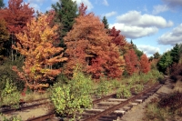
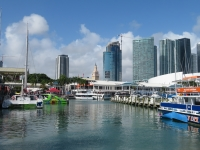
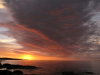

Jackson Covered Bridge
|
1991 Spring Vacation
FL→DC→IN→FL
May 9-24
139 photos (32MB)
Highlights: Okefenokee, Savannah, Charleston, Outer Banks, Washington D.C., Mt. Vernon, Shenandoah, Monticello, Indiana Dunes, Indiana Covered Bridges, Mammoth Cave, Great Smoky Mountains
Camera: Nikon N2020 (B)
|
Blue Ridge Parkway
|
1991 Autumn Vacation
FL→VA→FL
October 12-20
119 photos (30MB)
Highlights: Chattanooga, Great Smoky Mountains, Blue Ridge Parkway
Camera: Nikon N2020 (B)
|

Beale Street
|
1992 Summer Vacation
FL→TN→LA→FL
June 27-July 5
73 photos (16MB)
Highlights: Alabama, Nashville, Memphis, Vicksburg, Natchez, New Orleans, Mobile, Gulf Islands
Camera: Nikon N2020 (B)
|

Ellsworth
|
1992 Autumn Vacation
FL→ME→ON→FL
September 26-October 11
175 photos (41MB)
Highlights: Assateague Island, Cape May, Atlantic City, Philadelphia, Valley Forge, Poconos, New York City, Cape Cod, Boston, Acadia, New Hampshire, Niagara Falls, Gettysburg
Camera: Nikon N2020 (B)
|

Badlands National Park
|
1998 Summer Vacation II
TX→WI→SD→TX
July 22-August 2
83 photos (21MB)
Highlights: Hot Springs, Gateway Arch, Sioux Falls, Badlands, Mount Rushmore, Custer, Devils Tower, Spearfish Canyon
Camera: Nikon N2020 (B)
|
Mission San José
|
1999 Autumn Vacation
TX
October 2-9
30 photos (8MB)
Highlights: San Antonio Missions, Padre Island, Port Aransas
Camera: Nikon N2020 (B)
|

Diamond Caverns
|
2006 Summer Vacation
TX→WI→KY→TX
July 15-August 5
118 photos (32MB)
Highlights: Lincoln Library and Tomb, Wisconsin Dells, Chicago, Indiana Covered Bridges, Turkey Run, Kentucky Caves
Cameras: Nikon N2020 (B), Panasonic DMC-FZ5 (E)
|
Mount Rushmore National Memorial
|
2008 Summer Vacation
TX→SD→WI→TX
July 11-29
151 photos (46MB)
Highlights: Scotts Bluff, Mount Rushmore, Badlands, Devils Tower, Black Hills, Jewel Cave, Wind Cave, Custer, Pipestone
Camera: Panasonic DMC-FZ5 (E)
|
Split Rock Lighthouse State Park
|
2010 Summer Vacation II
TX→MN→TX
July 16-27
109 photos (27MB)
Highlights: Lake Superior North Shore, St. Louis
Cameras: Canon SX10 IS (G), Panasonic DMC-FZ5 (H)
|
Fort Wilkins Historic State Park
|
2012 Summer Vacation
TX→MI→TX
July 7-29
217 photos (58MB)
Highlights: Wisconsin Dells, Lake Superior North Shore, Keweenaw Peninsula
Cameras: Canon SX10 IS (G), Panasonic DMC-FZ5 (H)
|
Battleship Texas State Historic Site
|
2013-14 Winter Break
TX→FL→TX
December 26-January 3
53 photos (13MB)
Highlights: Miami, Battleship Memorial, San Jacinto Battleground
Cameras: Panasonic DMC-FZ5 (H), Canon SX40 HS (I)
|

Thomas Jefferson Memorial
|
2014 Spring Break
 AUS→ATL→DCA→ATL→AUS AUS→ATL→DCA→ATL→AUS
March 8-13
95 photos (24MB)
Highlights: Air & Space Museums, Marine Corps Memorial, Air Force Memorial, Lincoln Memorial, Jefferson Memorial, Arlington Cemetery, WWII Memorial, Korean Memorial, Vietnam Memorial, MLK Memorial, FDR Memorial
Camera: Canon SX10 IS (K)
|

Enid A. Haupt Garden
|
2016 Spring Break
AUS→ORD→DCA→BOS→AUS
March 12-17
94 photos (26MB)
Highlights: Washington Monument, Haupt Garden, Capitol, National Zoo, Roosevelt Island, Old Town Alexandria, Arlington Cemetery
Cameras: Canon SX40 HS (I), Canon SX10 IS (M)
|

Peninsula State Park
|
2016 Summer Vacation II
TX→WI→TX
July 16-25
95 photos (24MB)
Highlights: Lake Tomahawk, Door County
Cameras: Panasonic DMC-FZ5 (L), Canon SX60 HS (N)
|
Sturgeon Bay Canal North Pierhead Lighthouse
|
2018 Summer Vacation
TX→WI→TX
July 19-29
128 photos (33MB)
Highlights: Milwaukee, Door County
Cameras: Panasonic DMC-FZ5 (H), Canon SX60 HS (N)
|

Bayside Marketplace
|
2018-19 Winter Break
TX→FL→TX
December 26-January 2
65 photos (15MB)
Highlights: Miami, Jacksonville, New Orleans
Camera: Canon SX720 HS (O)
|

Pictured Rocks National Lakeshore
|
2020 Summer Vacation
TX→MI→TX
July 11-27
207 photos (57MB)
Highlights: Lake Superior South Shore, Door County
Cameras: Canon SX10 IS (M), Canon SX60 HS (N), Canon SX720 HS (O)
|
Duluth Harbor South Breakwater Lighthouses
|
2022 Summer Vacation
TX→ON→TX
July 16-August 1
171 photos (43MB)
Highlights: Lake Superior North Shore, Kakabeka Falls, Door County, Chicago
Cameras: Canon SX60 HS (N), Canon SX720 HS (P)
|
 Compilations
Compilations
|

Malcolm W. Martin Memorial Park
|
Dave's Faves
1991-2022
226 photos (60MB)
|

Lake Superior
|
Great Lakes Region
May 1991
July 23, 2006
July 17-21, 2010
July 16-25, 2012
July 19-22, 2016
July 24-27, 2018
July 13-24, 2020
July 18-31, 2022
700 photos (185MB)
|

Arlington National Cemetery
|
Washington, D.C.
May 1991
March 8-13, 2014
March 12-17, 2016
223 photos (57 MB)
|
|
NOTES
|
- Digital pictures (cameras E-O) are original material, no editing has taken place except for resizing and cropping; film pictures (camera B) are original material scanned from color negatives, editing has taken place to remove imperfections, resize and crop
- Pictures are displayed in chronological order
- Pictures are displayed at the rate of 20 per minute
|
|
|